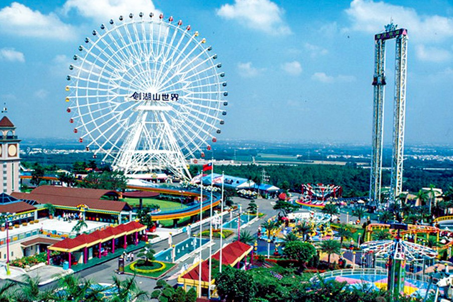
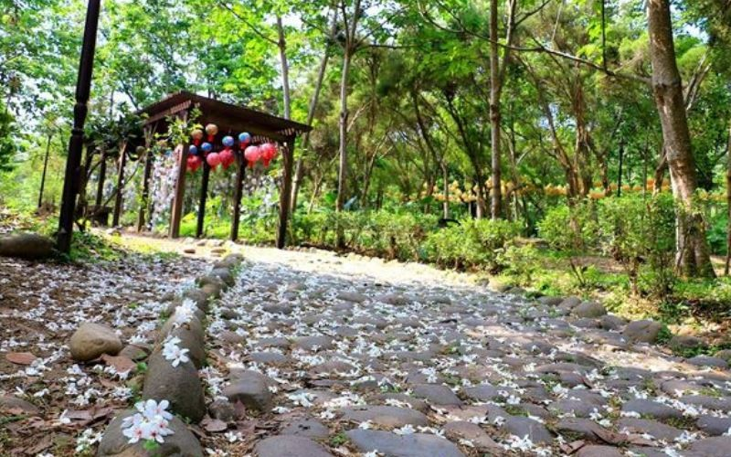
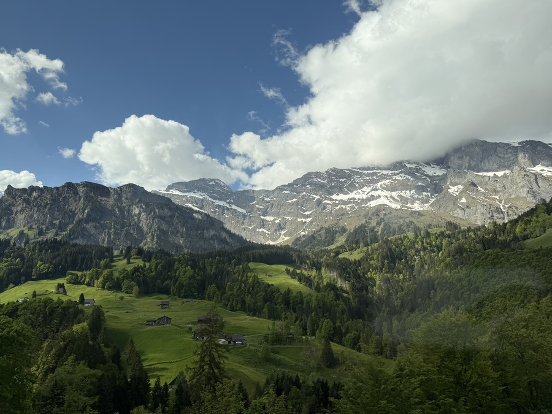
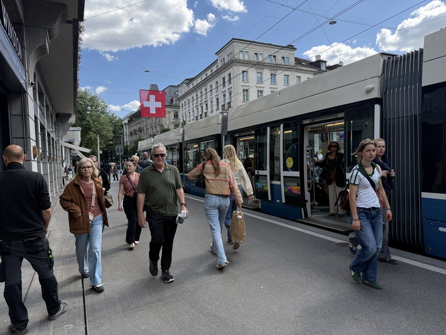
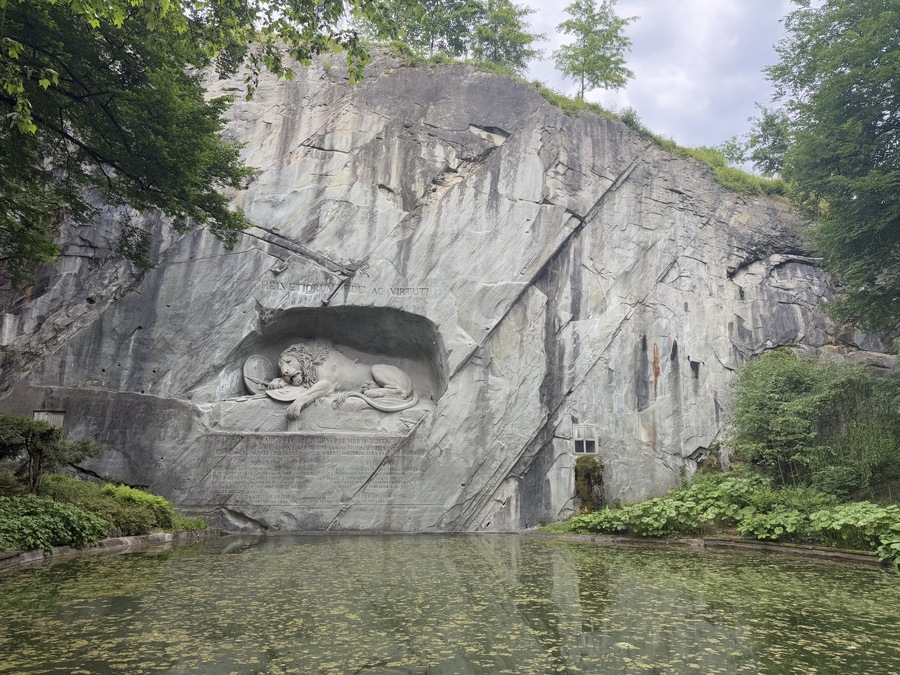
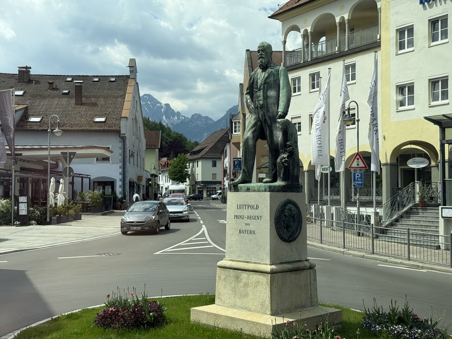

基本資料

姓名：魏詮紘
系別：電子工程系
年級：進四技延修
學號：C110252274
生日：2002/10/24
興趣：ACG
工作：實習生 - 資訊處（台郡）
我來自
大家好!我是來自雲林的學生，那裏是一個遠離喧囂純樸的鄉村，在我的童年能體會到田裡捏泥巴、到溪邊游泳，處處是蟲鳴鳥叫，慢節奏的生活步調相當令人心曠神怡。
劍湖山
桐花公園
我的興趣
我的興趣是ACG，從小就喜歡看動畫、漫畫，隨著年紀增長也開始接觸遊戲，這些愛好讓我在忙碌的學業中找到放鬆的方式，也結交了許多志同道合的朋友。
以下是我喜歡的一些作品：
- 動畫：《新石紀》、《無職轉生》、《鬼滅之刃》、《龍族》
- 遊戲：《英雄聯盟》、《PUBG》、《Minecraft》、《崩壞·星瓊鐵道》
這些作品不僅豐富了我的生活，也激發了我的創造力和想像力。
旅遊經歷
我喜歡旅遊，探索不同的文化和風景。今年我曾經去過德國、瑞士
歐洲秀麗的鐵力士山、全球最貴的蘇黎世、。
   聯絡資訊
📧 Email：c110252274@nkust.edu.tw